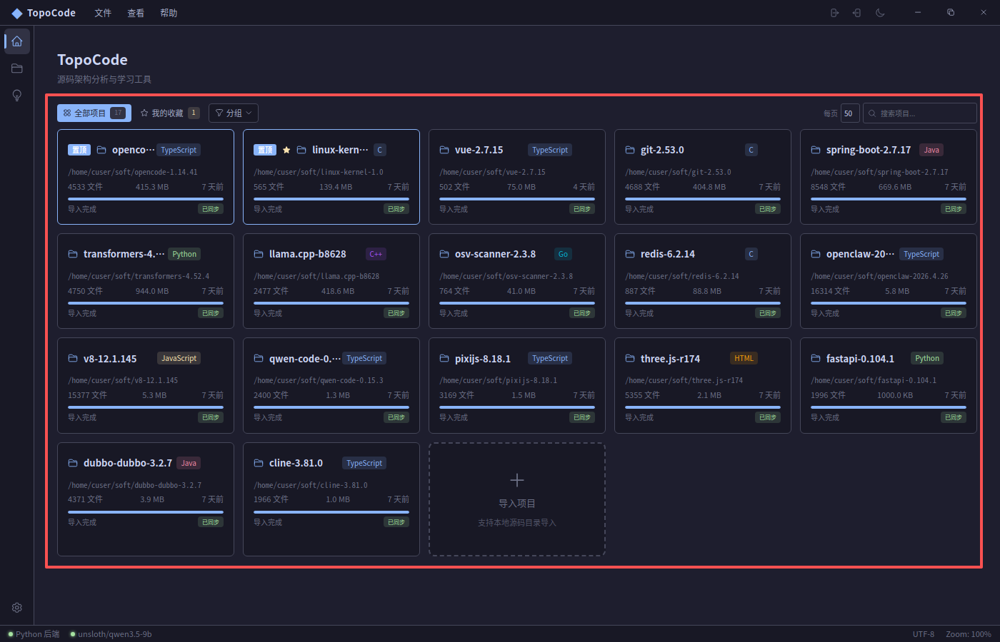
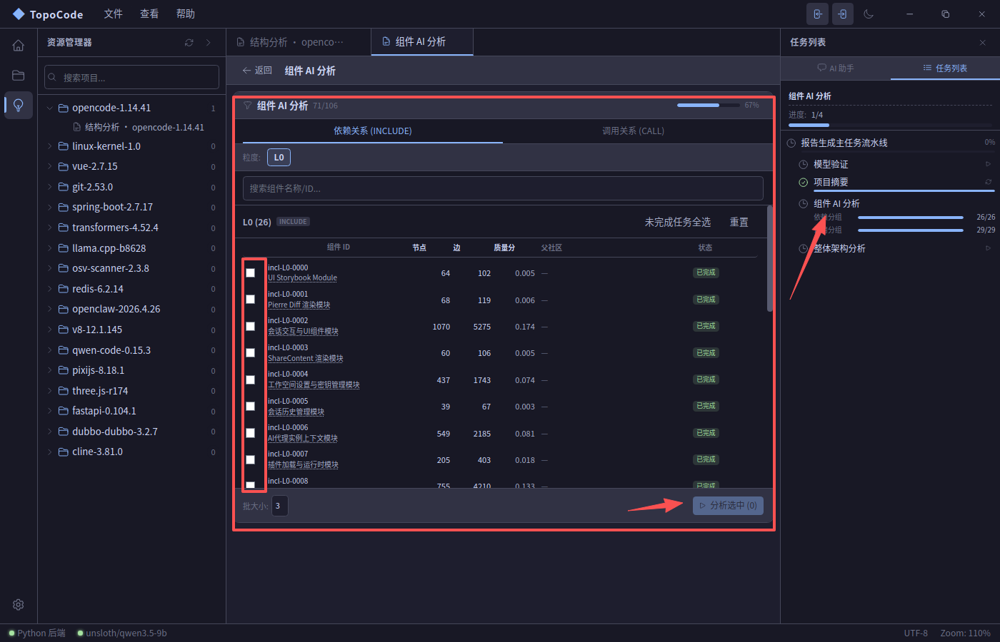

从源码解析到架构洞察，一站式完成
基于 Tree-sitter 的 AST 解析引擎，支持 11 种编程语言的语法树构建。
6 步分析管道：符号提取 → 调用图 → 依赖图 → Louvain 社区发现。
基于 LLM 的架构分析，自动生成组件文档和架构报告。
未来版本逐步添加，当前尚未支持
D3.js 力导向图、Mermaid 架构图、PlantUML 图表、Pixi.js 高性能渲染，多引擎覆盖。
知识图谱、多维分类（生命周期/技术栈/抽象层/用途）、TopoScript 动画教学引擎，构建团队代码知识体系。
项目分组（M:N 关系）、文件树浏览、分析任务管理（收藏/固定/标签），同时管理多个代码仓库。
从导入项目到生成架构报告，仅需几步
拖拽或选择本地源码目录
配置分析范围和参数
6 步管道自动完成
LLM 辅助架构文档
VS Code 风格界面，专注代码分析




现代桌面应用技术体系